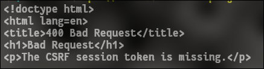

c u r l y
Submiting forms with curl POST command
November 14, 2025
Potential Use Case: signing in/accepting "terms of service" on public wifi networks without using a browser.
I kind of fell down this rabbit hole after a mutual of mine in a discord server I'm in was saying they have been playing around on an ancient laptop with windows xp on it. And he'd like to connect to the wifi at his university. But unfortunetly the browser he has is so old that it doesnt redirect him to the networks login page. So I thought I'd give it a try with curl
Test 1 :
find the elements on the webpage you need to interact with. Either with curl "https://example.com" and looking through the html directly
OR - (easier)
open webpage in a browser and right click on element (text box, etc. ) -> "inspect"
What we are looking for is the "name" of these input fields. (see image below)

We will use this name and pair it with what we want to input in that field, into our JSON. Which follows the format
{"key1": "value1", "key2": "value2"}
Now we can start building our curl command. The basic parts we will use are:
| argument | description |
|---|---|
| -X POST | tells curl we will be sending data |
| -H "Content-Type: application/json" | tells curl the data type |
| -d 'ur data go here' | the data in question |
curl -X POST www.website.com -H "Content-Type: application/json" -d '{your json data goes here}'
https://httpbin.org/post
This is a useful example website to make sure your sending the correct data. It simply echos back a JSON response to what you send it.
testing out our command:
curl -X POST https://httpbin.org/post -H "Content-Type: application/json" -d '{"login": "Organism", "password": "CryptOrchid", "accept_terms": true}'

as you can see within the "json" { } brackets, the testing website echos it back correctly.
Test 2:
You may get a server response of "csrf-Token missing". To get past this you will need to get the token from the curl response previously and then send it with your data. OR the token may be included in a cookie, you can save to a text file to extract it
I am testing on the Fedora linux account login website, and here the token is inside a hidden input field.
First I create a variable called TOKEN, curl the website and then pipe it into a grep command which searches for the hidden input field of the token. I then use the cut command and a few reverses to trim off the leading and trailing quotes so only the token itself goes into my variable "TOKEN"
TOKEN=$(curl https://accounts.fedoraproject.org/ | grep -oP 'name="login-csrf_token" type="hidden" value="\K.*' | rev| cut -c 3- | rev)
next step is to send the data with the token
curl --data "login-username=my_username&login-password=my_password&login-csrf_token=$TOKEN" "https://accounts.fedoraproject.org/"
-------------------------------------------------------
we're getting closer
the token is getting recieved...but its not the right one. I believe the reason being is that we are using 2 seperate, distinct curl commands. So when we try to post the data/token it's generating a new one as well.
Test 3:
Lets ensure we are using the name session by first saving a cookie with -c to a text file we will call "cookies.txt". And then in our second curl we send that cookie with -b.
I also had to include an '-H "referer: "' argument as the server gave an error that there wasn't one.
TOKEN=$(curl -c cookies.txt https://accounts.fedoraproject.org/ | grep -oP 'name="login-csrf_token" type="hidden" value="\K.*' | rev| cut -c 3- | rev)
curl -H "Referer: https://accounts.fedoraproject.org/" -b cookies.txt --data "login-username=my_username&login-password=my_password&login-csrf_token=$TOKEN" "https://accounts.fedoraproject.org/"
This seems to work, however the html that is returned is the same as the login page, however going through it it does appear our inputs have been filled out. We just need to figure out how to script the "submit" button being pressed
Test 4:
I found a very useful plug-in for firefox called "live Https headers" that prints off all the requests made when you interact with a webpage. I then was able to see that when I press the "log in" button, it was changing the value of the button to 1. So all I had to do was add this in to my second command when I post the username/password/token.
And finally it is also required to add a "-L" to tell curl to accept redirects. As by default curl will not.
Conclusion:
My final commands are :
1 : TOKEN=$(curl -c cookies.txt https://accounts.fedoraproject.org/ | grep -oP 'name="login-csrf_token" type="hidden" value="\K.*' | rev| cut -c 3- | rev)
2 : curl -H "Referer: https://accounts.fedoraproject.org/" -b cookies.txt --data "login-username=my_email&login-password=my_password&login-csrf_token=$TOKEN&login-otp=&login-submit=1" "https://accounts.fedoraproject.org/" -L
------------------------------
command 1 :
1.1 curls webpage
1.2 saves cookie
1.3 stores csrf_token into variable
command 2 :
2.1 curls webpage sending cookie and referal address
2.2 submits username/password/csrf_token/button_input
2.3 allows redirection with -L